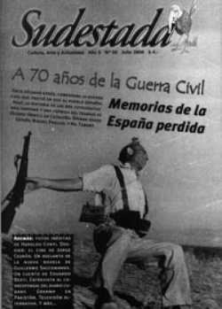

Buscar
Guillermo Saccomanno: La partera de la historia
En exclusiva para Sudestada, Guillermo Saccomanno nos envió un capítulo recién salido del horno de su próxima novela en preparación que se titula provisoriamente «La partera de la historia». Un relato que retoma los personajes centrales de su novela «La lengua del Malón» y cierra un capítulo de la historia reciente de nuestro país.
Edición N° 50
Julio 2006
Revista bimensual
Comprar edición impresaSumario
- A 70 años de la Guerra Civil: Memorias de la España perdida
- «Juan Polti. half-back», de Horacio Quiroga
- Jorge Cedrón: El tigre feroz
- Guillermo Saccomanno: La partera de la historia
- Un corazón en Pakistán
- Apagá la tele y hacé tu programa
Compartir Articulo
A veces, entre hora y hora de clase, en la sala de profesores, me arrinconaba junto a una Volcán de fuego asmático. Le funcionaban tres velas solamente. Pero bastaba su radiación tibia para acercar cada tanto las manos endurecidas por el frío, frotarlas y agarrar de nuevo la birome, volver a la carga sobre mi cuaderno mientras alguno de mis colegas me observaba con curiosidad. Por ejemplo, Crespi, el de filosofía, a quien cada tanto se le daba por emerger de la página de turf y contaba una de sus historias de jugador. Su predilecta era una que le había pasado en Roma.
En esa época yo era joven y había viajado a Roma a cursar un seminario. La filosofía medieval, por ahí se me daba. Me había ganado una beca de una universidad chupacirios. Pero venía patinándome las liras timbeando en el Trastevere. Si seguía timbeando, me tenía que volver antes. Aguanté todo lo que pude. Pero una tarde la tentación me pudo. Y se me dio por los burros. Había un pingo que se llamaba Fedor. Con ese nombre no podía fallar. Pero falló. Un matungo. Y acá me tiene. Fin del viaje, fin de una carrera, fin de la filosofía. Aplique la lógica, Gómez. La suerte es todo. Más hoy en día.
Esa tarde, en un entrehoras, estábamos los dos solos en la sala de profesores. Crespi era un sesentón que, se comentaba, había perdido la familia por el juego: esposa, hijos. Propiedades, todo. Hasta él mismo se había perdido. Flaquísimo, arrugado como una pasa, con una pelada brillante que volvía su cabeza una auténtica calavera, tenía un sentido inequívoco. Una ficha en el casino, un naipe, un número en la quiniela o un pingo le daban lo mismo. Algunos colegas comentaban que tenía un sumario en el ministerio por haber sido sorprendido jugando al truco con sus alumnos del Nacional San Martín.
En esos días, en esas noches, tras la partida de Diana, y disculpen esta disgresión: estuve a punto de decir "después que Diana desapareció", y decir que alguien "desapareció", como es sabido, en esos días, en esas noches, no era un lapsus. En esos días, mejor dicho, en esos días que eran noches, aumentó mi compulsión a las anotaciones en esos cuadernos que yo daba en llamar mi diario pero que, era evidente, al menos para mí, no era la melancolía barthesiana. Escribía, como he dicho, sobre la ausencia. Que la ausencia funcionara como arranque de un dispositivo que hilvanaba las más variadas asociaciones sobre el vacío amoroso no significaba que todas estas variaciones encubrieran lo esencial del tema: la partida de Diana. Que su partida fuera electiva no significaba que no pudiera convertirse en desaparición a la vuelta de la esquina. En el diario que yo llevaba, como dije, se reproducían atardeceres sin consuelo, madrugadas tan sufridas como interminables y la llovizna, porque la llovizna estaba siempre. Como el frío. Me temblaba en los huesos el frío. Siempre la llovizna, siempre el frío, siempre. Y este modo de repetición, las frases machacando en la misma pena, eran más que un rasgo de estilo de esa escritura, un callo. Porque se me iba encalleciendo el corazón.
Se lo digo con la autoridad que me da la filosofía, decía Crespi. Claro, usted va a decir que como me tiran los burros, la rula y el pocker lo mío no es serio. Lo único que cuenta en esta vida es el azar. Créame, hasta para los pendejos que se metieron en la joda vale. Por ejemplo, ese alumnito suyo que se chuparon hace unos meses. No tuvo suerte. El pendejo apostó y perdió. Que se lo chuparan dependió de un sinfìn de circunstancias. Hoy la historia más que nunca me da la razón. Es cuestión de suerte seguir vivito y culeando.
Por favor, Crespi, le dije. No es tan sencilla la cosa.
Acompáñeme en este razonamiento mío sobre el azar, Gómez. Con los militares en el poder se confirma mi teoría. Por qué unos zafamos y otros no. Usted no me va a decir que en la volteada caen sólo los que están en la joda. No, querido amigo. A cualquiera puede tocarle. Figuramos o no figuramos en la agenda de un conocido. El uno y el todo. Todo tiene que ver con uno. Y nosotros tenemos que ver con el todo. Lo cazan o no lo cazan al sujeto. Si lo cazan, muere en el camino o llega vivo a la tortura. Si lo torturan, lo canta a uno o no lo canta. Usted no tiene un carajo que ver con nada, pero a usted, una fija, el ñato en la picana lo canta primero para que tengan tiempo de zafar los camaradas que sí andan en la rosca. Hasta a mí que soy un cero al as en política me puede pasar. Todos estamos agendados por la muerte. Y la muerte no se guía por el orden alfabético. Toda esa historia del caballero medieval que desafía a la muerte al ajedrez para salvarle la vida a la troupe de un circo, pura macana. La muerte no juega al ajedrez. La muerte juega, si quiere, a los dados. Simplísimo. Mientras tanto, apuesto. Si la suerte me favorece, pego un batacazo y me mando a mudar.
Y si no pega el batacazo, le pregunté.
Me jodo, contestó.
Después Crespi paseó una mirada por la sala de profesores como si alguien más pudiera escucharnos y, confidencial, me dijo:
Entre nosotros, Gómez, en confianza. A mí no puede ocultarme su simpatía por los que están en la cosa. No tema, que no soy buchón. Pero tenga cuidado, se le nota el cagazo. No digo que sea un gallina. Digo que simplemente se le nota.
Crespi me pasó el diario:
Le dejo el Clarín, Gómez.
Entonces vi las fotos y la noticia. Enmudecí.
Crespi advirtió mi desolación. Porque me dijo:
La desgracia. Siga al 17, Gómez. Sígalo como exorcismo. Por ahí el batacazo lo pega usted. Y se puede rajar.
El 17, pensé, también había sido una consigna:
Fusiles y machetes,
por otro diecisiete.
La escritura crea un espejismo de la acción, anoté en este cuaderno. "Hace años que he renunciado a pensar coherentemente", escribe Cortázar en un prólogo a un ensayo sobre John Keats. Y afirma: "Mi lapicera Waterman piensa mejor por mí. De todas maneras mis numerosos prejuicios no la dejan andar libre por la página". Quizá escribir era una forma de sentir que hacía algo, aunque la idea de hacer era tan confusa. Qué podía hacer yo para devolverle la vida a Martín. Al ver su foto en el diario volví a verlo cuando era un chico, con su uniforme verde de colegio inglés, tan mesurado para su edad, lo que por entonces se llamaba un chico juicioso. Martín sentadito en la Richmond, compartiendo la mesa con su madre y su amante, las dos enamoradísimas, intimidadas por la presencia del nene. Lo ví sentado entre ambas en un cine de Lavalle mientras ellas, por detrás del nene, por encima del respaldo, se acariciaban las manos. Lo ví otra tarde, paseando por la avenida Santa Fe del brazo de su madre yendo al encuentro con su enamorada: aunque Martín no le llegaba al hombro a su madre iba con ella del brazo, como si ya fuera lo que sería más tarde, un cadete impetuoso del liceo naval. Esa tarde por Santa Fe faltaban unos meses para que su madre muriera con su amante sáfica bajo las bombas de la aviación naval y unos años escasos faltaban también para que el chico dejara de ser Martín para convertirse en el cadete Ulrich. Y, de golpe, volví a ver a Martín, ahora todo un hombre, aunque con la vehemencia de la juventud, tal como lo había encontrado hacía apenas unos meses bajo las recovas del Banco Hipotecario, frente a la manifestación de las madres. Lo ví con su bigotazo mejicano, su tricota, el gamulán, el vaquero y las botas de gamuza. Pensé en sus tres cambios de uniforme: el uniforme de colegio inglés, el uniforme de cadete del liceo naval y ahora el uniforme civil de combatiente montonero. Podía intentar un resumen de estas imágenes en una poetización, referencias a la infancia y el amor prohibido, incluir una cita con alusiones al amor como un combate y así, con una retórica hermética, vaciar la desesperación en la hoja del cuaderno, como dije, con la ilusión de que al escribir hacía algo por Martín. Pero no podía engañarme. La poesía era narración y yo me sentía como los izquierdistas asalariados en la prensa, así de eufemístico como uno de esos redactores castrati. Si la poesía era narración y la narración eran hechos, lo que yo escribía era un miedo tan intenso que tenía miedo hasta de reconocer su nombre. Lo que yo escribía era como una manzana arenosa, ese gusto tenía. Como dije: la escritura es un espejismo de la acción. Y un diario íntimo, así sea lo único que uno puede escribir, no redime con su sueño de eternidad la desgracia del momento en que uno anota esta palabra: desgracia. Y yo, parafraseando a Crespi, estaba jodido. Había apostado a favor de mis seres queridos y una vez más, como me había pasado en el 55, cuando mis amigas enamoradas murieron bajo las bombas, la literatura era un aguantadero. Ni siquiera tal vez. Pura intemperie.
(El capítulo completo en la edición gráfica de Sudestada Nº50-Julio 2006)
Comentarios
Guillermo Saccomanno
Articulos más vistos


LIBRERÍA SUDESTADA

Colección infantil

Distribuidora de Libros

Suscripción

Sudestada en URUGUAY

Otros articulos de esta edición
 Editorial
Editorial
«Juan Polti. half-back», de Horacio Quiroga
Jorge Cedrón: El tigre feroz
De chico parecía que iba a ser futbolista. También tenía madera para galán de telenovela. Él, en cambio, se decidió ...
A 70 años de la Guerra Civil: Memorias de la España perdida
Siete décadas atrás, comenzaba la guerra civil que partió en dos al pueblo español. Aquí, la historia de las dos ...
Apagá la tele y hacé tu programa
Como pasó con las radios, la televisión comunitaria tuvo su esplendor hacia fines de los ochenta. Luego de la explosión ...
Un corazón en Pakistán
Un Contingente de médicos cubanos trabajó durante siete meses ayudando a las víctimas del terremoto en Pakistán, dejando una lección ...